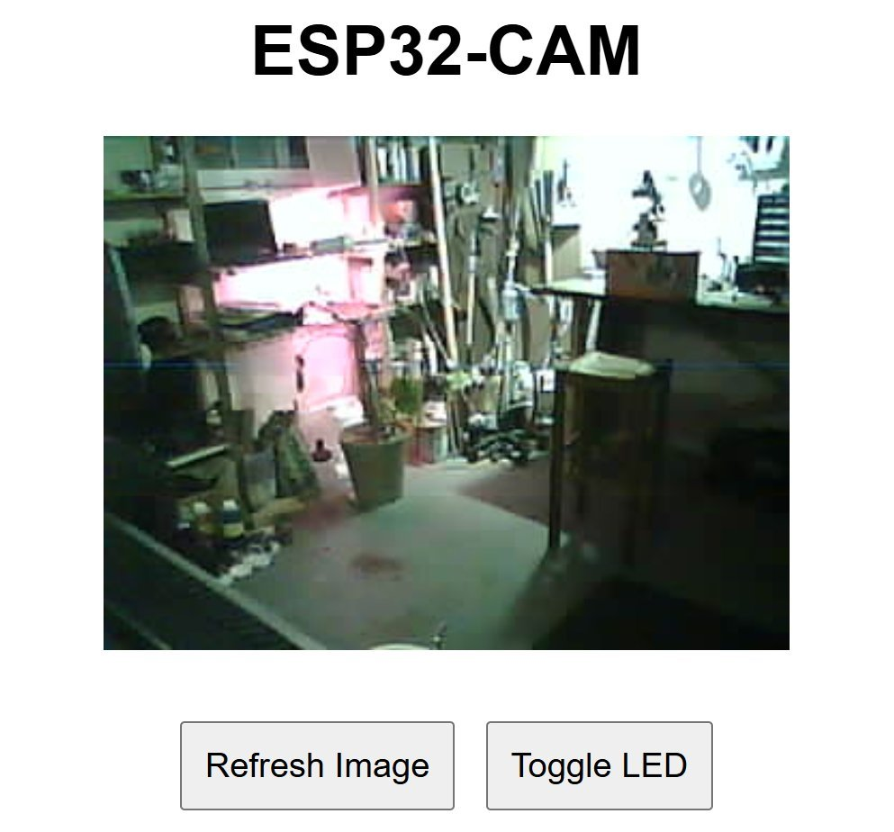

I hooked up this little ESP32-CAM to my wifi. It takes a picture every 30s and sends it to flash-8B with a prompt like 'is there a person in this image?'. If the model says yes (with structured outputs), it turns on an LED. If I left this on for a month it would cost about $1.
Obviously this is the worst security cam ever, BUT I think it's a compelling demo. You can put some 'intelligence' in the loop of a hobby project with <$10 in hardware and fractions of a cent per API call. You can 'program' it in natural language like 'if there is an orange cat playing with my plant'. And with LLM help, modifying the code is possibly as easy as 'make this send me a discord notification if the alarm is triggered twice in an hour'.
Anyway, now that I know this thing works it has other projects it is destined for. But cool to know how easy it is to whip this up :)
Obviously this is the worst security cam ever, BUT I think it's a compelling demo. You can put some 'intelligence' in the loop of a hobby project with <$10 in hardware and fractions of a cent per API call. You can 'program' it in natural language like 'if there is an orange cat playing with my plant'. And with LLM help, modifying the code is possibly as easy as 'make this send me a discord notification if the alarm is triggered twice in an hour'.
Anyway, now that I know this thing works it has other projects it is destined for. But cool to know how easy it is to whip this up :)
